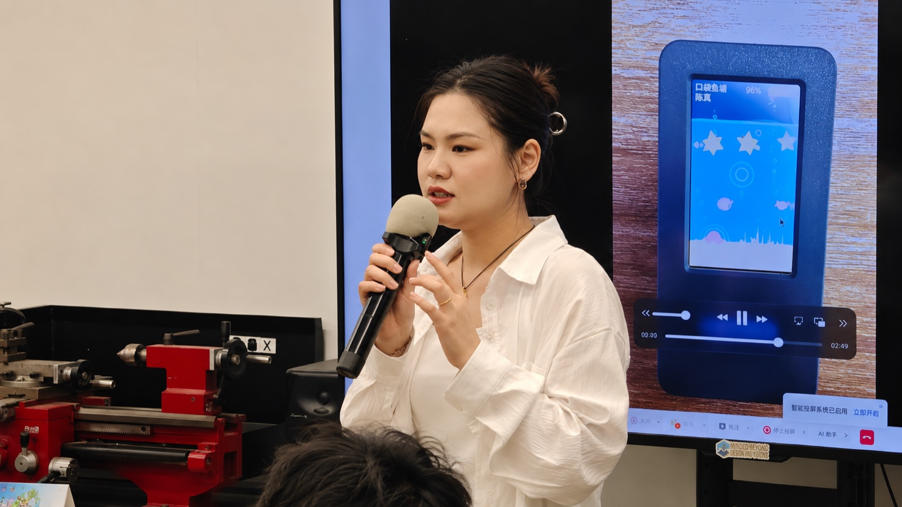
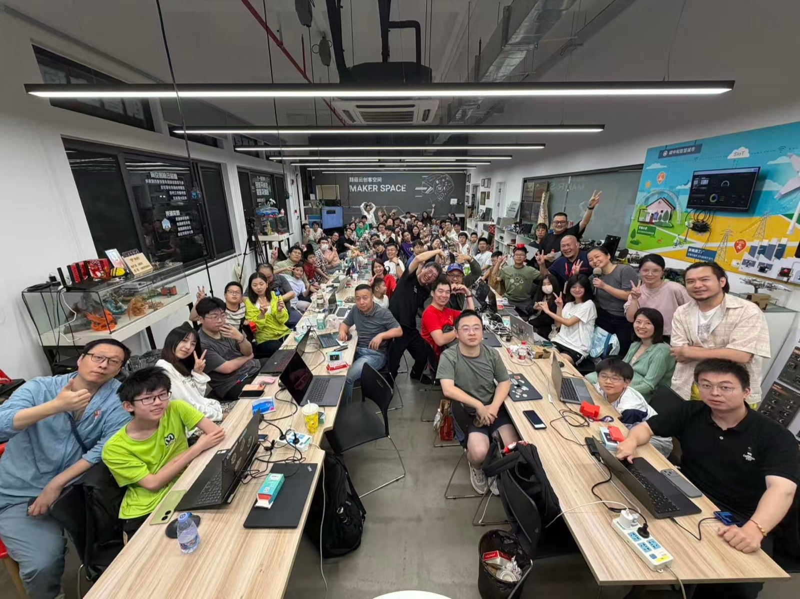
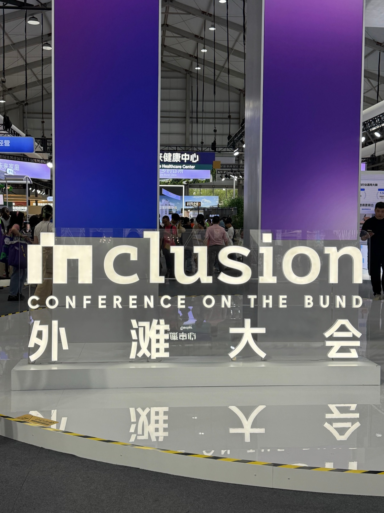
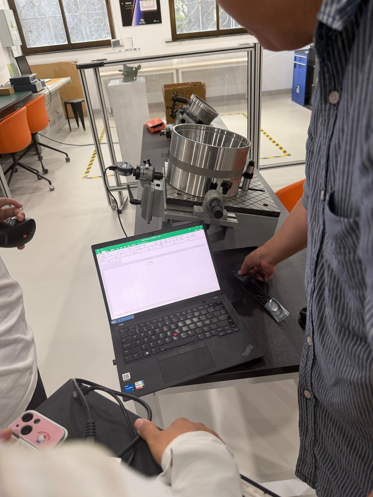
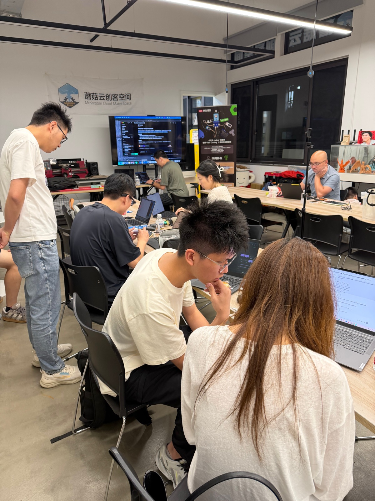
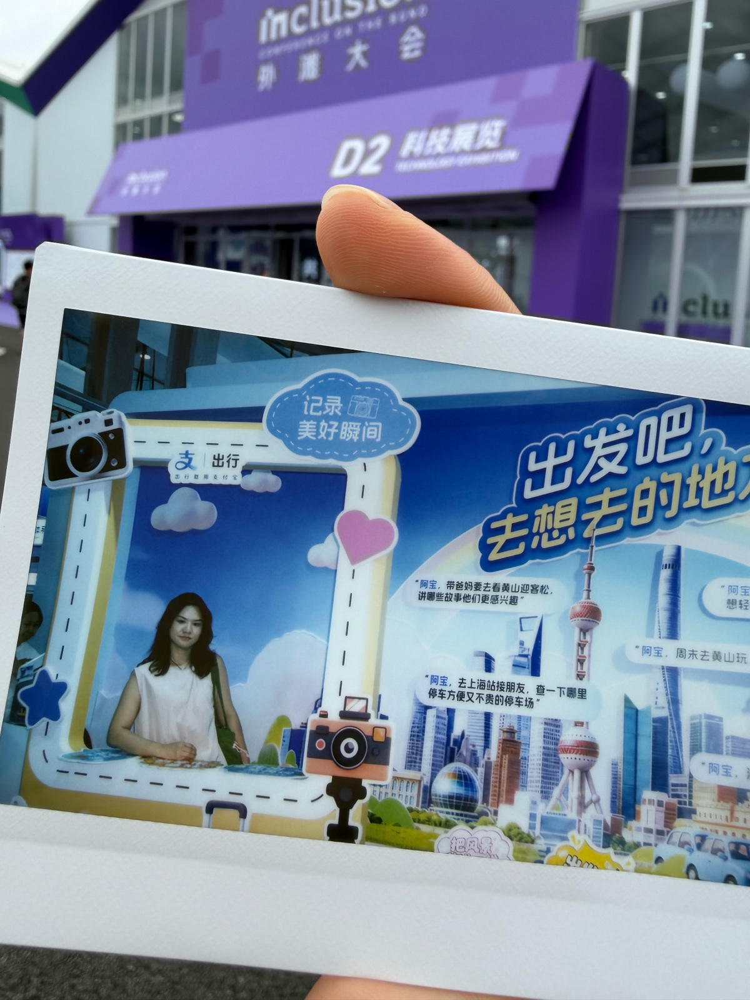
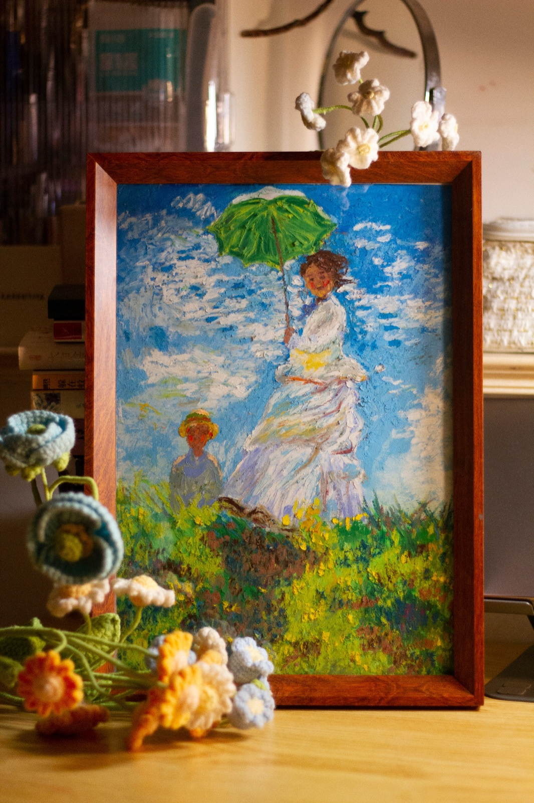
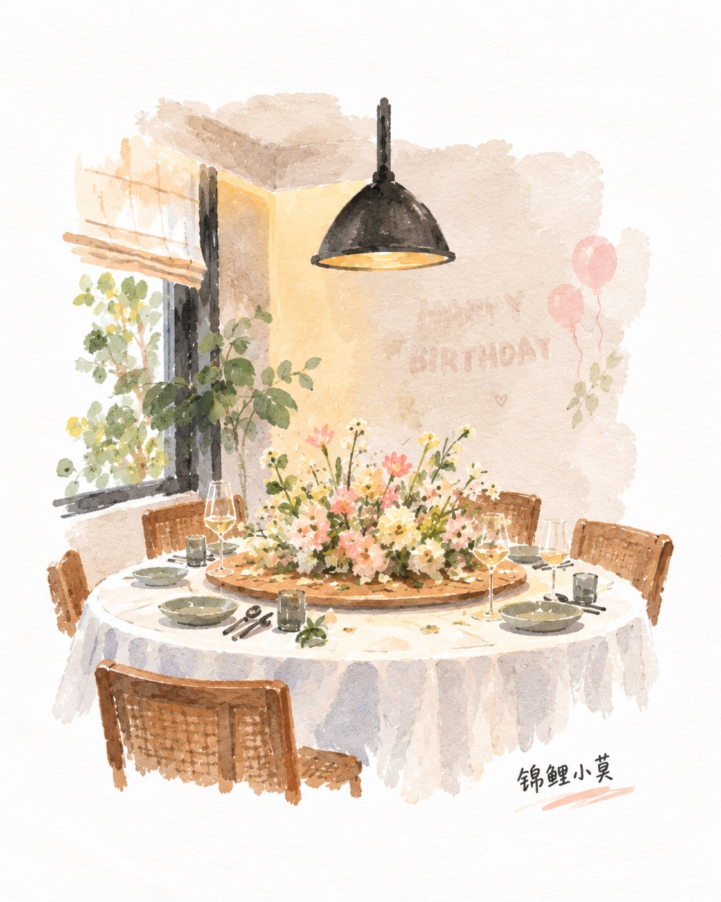
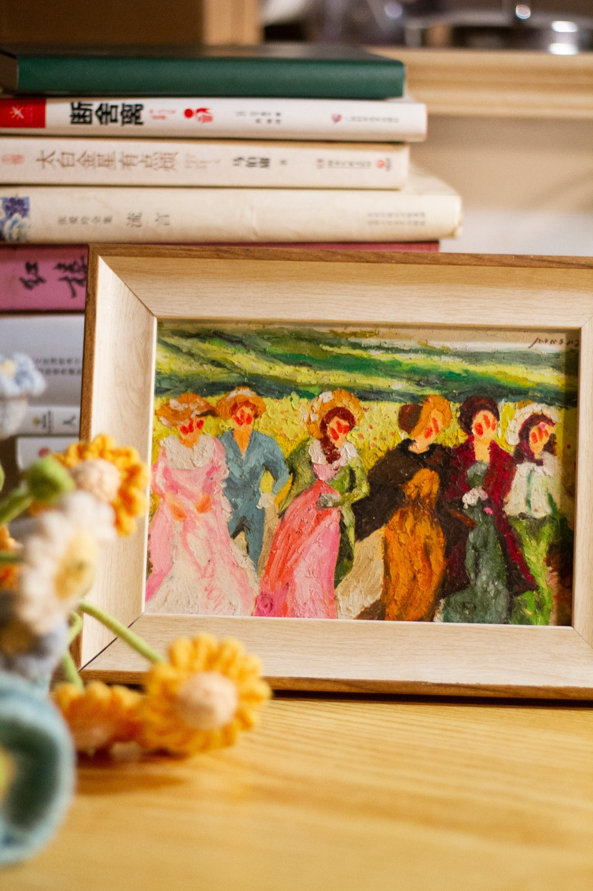

About / 莫秀文
把问题想清楚，
把产品做出来。
我关注 AI 如何在真实业务中发挥作用：
先理解用户要完成的任务和现有流程，再判断哪些环节适合交给 AI、哪些决定需要由人掌握，把需求转成清楚的产品目标与方案。
从方案到可用：
我重视数据与技术条件、效果验证，以及出错时的处理方式，通过原型和实际反馈推进迭代。设计积累帮助我组织复杂信息，把 AI 的能力、边界与反馈呈现成容易理解和使用的体验。

从想法，到现场电子鱼塘 · 分享记录

把 AI 工具做进自己的工作与生活
持续构建与验证跨 Agent 上下文、会议整理、桌面 AI 与轻量硬件体验。
工业 AI 与企业复杂系统
参与语义平台、质量分析 Agent、智能体平台和研发管理系统，负责交互与产品体验。
在真实业务中理解角色与流程
通过政务、社会治理和矛盾调解类产品，积累多角色协作与复杂业务交互经验。
从界面设计起步
建立视觉与交互基础，逐渐把关注点从“界面如何呈现”扩展到“产品为何这样工作”。
Beyond the Screen
好奇心，也走出屏幕。
走进科技展，看看新技术怎样被用起来；与创客交流，把想法放进讨论里。也通过插画、AI 插画 × 花艺探索，把观察与想象变成具体的表达。







Get in Touch
一起把下一件事，
变得具体。
欢迎交流 AI 产品岗位、项目合作，以及有意思的产品想法。
m1941696989@gmail.com邮件可直接打开你的邮件应用，也可以复制地址联系我。